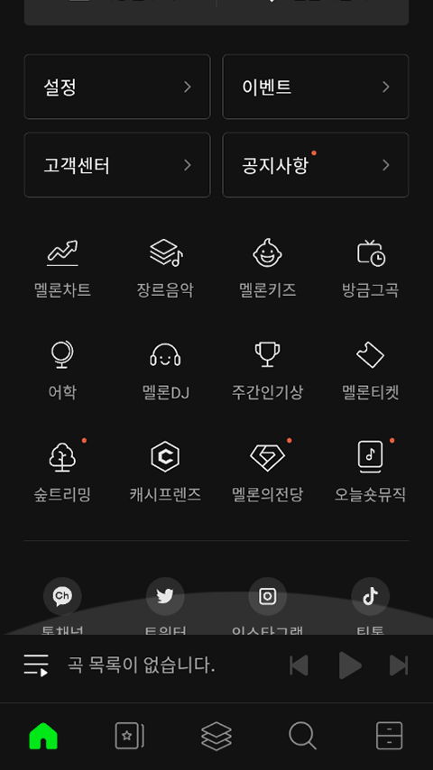
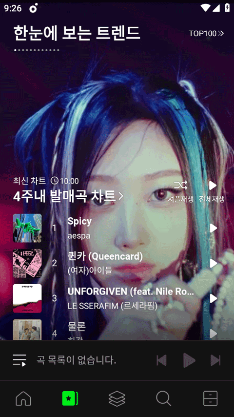
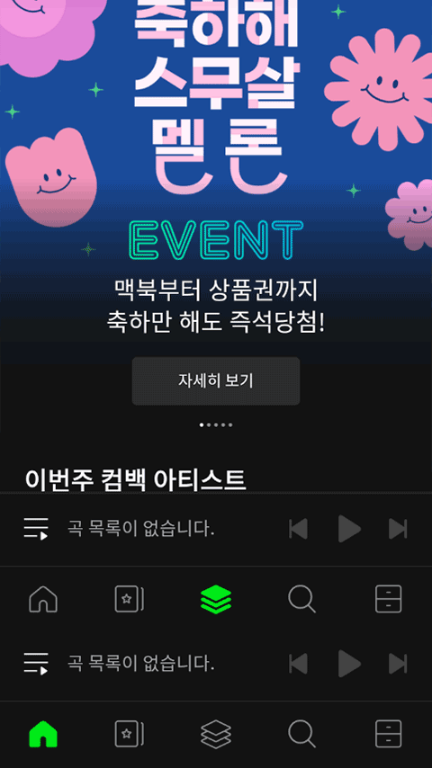

Melon 能力全景盘点：从标签找歌到 Hi-Fi 无损，这才是 K-POP 歌迷的完整答案
Melon 远不止韩国版网易云那么简单——标签推荐、五档音质、Melon TV、DLNA 外接，盘点它真正能打穿的能力边界，以及哪些人值得为它付费。
开头：为什么要认真盘点 Melon
国内 K-POP 歌迷对 melon官网 的态度一直很微妙——有人说它是"韩国 QQ 音乐"，有人说它的音源榜才是真正的打歌战场，还有人花了高价订阅却只用它刷一个榜就觉得亏。事实是，Melon 的能力面比多数人看到的要宽得多，而且很多功能设计得相当克制——不堆花哨的 UI，而是在音乐消费的几个核心环节上做深做透。
这篇盘点不想重复 melon下载 安装、注册充钱这种入门教程，而是把 Melon 的能力域完整铺开：它在哪些地方真的比国内同行强、哪些地方是针对韩国市场的本地化设计放到海外就卡壳、以及什么样的使用场景下它值得你掏那个钱。
能力域一：智能发现——标签网格比榜单更懂你
多数音乐 App 的"探索"区是重灾区——铺一堆人工精选歌单和排行榜，看起来内容多，实际每个人看到的东西差不多。Melon 换了个思路：用推荐标签网格做入口，而且完全基于你的播放历史。
这个功能藏在底部标签栏的第四个 tab（탐색 / 探索），很容易被忽略。点进去从上到下是：搜索框、你的专属推荐标签、全站流行标签、艺人推荐。推荐标签是 Melon 从几百个标签库中自动挑出来的——如果你常听 aespa 和 LE SSERAFIM，可能冒出「걸그룹 신인」（新人女团）；收藏了很多 IU 的抒情曲，就会出现「감성 발라드」（感性抒情）。每个标签点进去就是一个临时歌单，按匹配度排序。

这个设计的价值在于：榜单告诉你"大家都在听什么"，推荐标签告诉你"你可能还会喜欢什么"。两者结合，既能追热度，又能挖到榜单之外的小众好歌。对比曲风榜那种纯按风格分类的静态列表，标签网格更像一个动态的口味雷达——每天刷完 TOP 100 之后花两分钟逛一圈，经常能挖到惊喜。
搜索框本身也藏着细节：支持艺人全名精确匹配、专辑名过滤、部分关键词模糊搜索，还能直接搜 OST 合集。什么都不输直接点搜索框，会弹出当前热搜词榜单，类似微博热搜的玩法。这些小设计放在一起，让 Melon 的"找歌"体验比大多数同行更有层次。
能力域二：音质与订阅体系——五档音质 + Hi-Fi 无损的完整梯度
Melon 的订阅体系是它和国内流媒体拉开差距的核心。它不是简单的"会员/非会员"二元结构，而是五档音质 + 对应订阅级别的完整梯度：
- 免费用户：MP3 320K，带广告
- 基础订阅（Melon 利用权）：AAC+ 256K 无广告，约 3900 韩元/月
- Hi-Fi Streaming Club：FLAC 无损 + 全部五档音质 + 无限制整曲播放，约 13200~16500 韩元/月
Hi-Fi Streaming Club 是 Melon 的订阅顶端，也是唯一支持 FLAC 无损播放和下载的档位。FLAC 能完整还原 CD 母带的全部数据，对比 AAC 320K（有损压缩，丢弃约 80% 原始数据），在高保真耳机或音响上能听到更多乐器泛音、人声呼吸、空间残响。但有个前提——手机内置 DAC 加 100 块以下的耳机，大概率听不出区别，开 FLAC 只是浪费流量。
订阅购买有个关键细节：PC Web 端 event.melon.com/hifi/introduce.htm 购买最便宜，iOS App 内购因为苹果抽成会贵 20~30%。买完手机 App 自动升级，不用额外操作。
海外用户能不能买是个灰区——官方声明需要韩国手机号本人验证，但实际上 PC Web 端用国际信用卡部分用户能成功，取决于发卡银行和风控。手机 App 内购成功率不确定，第三方代购有封号风险不推荐。单首 FLAC 也能买，约 2000~3000 韩元/首，适合不想花全价但特别喜欢某张专辑想收无损版的人。

订阅升级之后，配合 DLNA 或 AirPlay 把 FLAC 推给外接音响，才能真正发挥无损音质的优势。这一点 melon文档 写得很细——但前提是你有个靠谱的解码器。
能力域三：播放器精细控制——循环、随机、倍速、定时一个不少
播放器是任何音乐 App 的基础设施，但 Melon 在这块做了不少细节打磨。全屏播放器底部的控制区从左到右是：上一首（长按快退 10 秒）、播放/暂停、下一首（长按快进 10 秒）、循环模式、随机播放。
循环模式有三种：列表循环（播完最后一首回第一首）、单曲循环（永远循环当前曲）、顺序播放（播完就停）。单曲循环对 K-POP 粉丝学舞学唱特别实用——很多人不知道这个功能的长按触发。
随机播放也不是"纯随机"：Melon 的算法会参考你的播放历史和喜好标签，更偏向你可能喜欢的歌，而不是完全无差别抽取。这一点国内同行做得比较粗糙，多数就是简单的 shuffle。
倍速播放支持 1.25x / 1.5x / 2.0x，而且自动保持音调不变（不变调加速），学舞扒动作快进看衔接特别方便。定时关闭（睡眠定时器）有 15/30/60 分钟和"当前曲目结束后"几个选项，触发后会渐变降低音量再停，不会突然吓醒。
这些控制放在一起看起来都是"老功能"，但细节到位：进度条支持任意位置点击跳转、双击封面触发 A-B 循环、长按上下一首持续快进——Melon 没在播放器上堆花里胡哨的皮肤和主题，而是把基础控制做扎实了。

能力域四：多媒体延伸——Melon TV 把 K-POP 视频聚合到一个入口
Melon TV 是个被严重低估的功能。它藏在主菜单里（左上角汉堡图标往下滑就能看到 멜론TV），把原本散落在 YouTube、V Live、各个官方频道的 K-POP 视频聚合到一个入口。内容覆盖三类：官方 MV（最高 1080P）、舞台节目（打歌舞台、综艺舞台、颁奖典礼演出）、独家内容（Melon 独家访谈、幕后花絮、Melon Music Awards 现场）。
对比分别关注 SM、HYBE、YG、JYP 等一堆官方频道的碎片化体验，Melon TV 的核心优势是：自动把你常听艺人的所有视频聚合在一起，不需要手动搜。免费用户也能看，只是有少量广告，部分独家内容需要订阅。
艺人频道和 Melon TV 是交叉的——艺人频道按艺人聚合内容（一个艺人的所有东西），Melon TV 按内容类型分类（MV/舞台/综艺），两者互补。对于想系统追某个艺人的粉丝，先在艺人频道找到入口，再跳 Melon TV 看更多视频，是一个很顺畅的流程。
短板也要说：针对海外用户的硬限制
盘点到这里，得客观聊聊 Melon 对非韩国用户的硬限制。
最致命的是区域限制：Melon 主站和 App 在国内需要科学上网才能访问，而且经常切换节点可能触发风控。订阅购买需要韩国手机号验证或国际信用卡，代购又有封号风险。这一点国内同行反而做得更友好——网易云、QQ 音乐直接在 App 内购就行。
第二是语言门槛：App 界面主要是韩文，虽然有部分英文切换，但多数深层功能文档只有韩文。探索标签的推荐词也是韩文标签——不熟悉的用户可能看不懂「감성 발라드」是什么。
第三是付费体系的割裂：Hi-Fi 订阅不包含 MP3 下载券，想下载无损 FLAC 要单独付费，想下载 MP3 又要买另一种券。这种分拆式付费对韩国用户可能是灵活选项，但对海外用户来说理解成本太高。
第四是榜单权重问题：Melon 榜单的实时性和权威性确实是业内公认的，但打歌期间的刷榜争议一直存在，而且海外用户参与打歌的门槛比韩国用户高得多。
什么样的人该用它：三类画像
盘点完能力和短板，Melon 到底值不值得你花那个钱，其实取决于你属于哪一类人：
第一类：重度 K-POP 歌迷。如果你每天花 2 小时以上听歌、追打歌舞台、在意音源榜排名，Melon 是目前最完整的 K-POP 消费平台——音源榜实时性、艺人频道聚合、Melon TV 的舞台内容，这一套组合拳没有国内同行能完全替代。Hi-Fi 订阅对音质敏感的歌迷来说更是刚需。
第二类：追求音质的发烧友。如果你有好耳机或音响、在乎 FLAC 无损、想把音源通过 DLNA 推给解码器，Melon 的 Hi-Fi Streaming Club 提供了一个合法且来源可靠的无损音乐渠道。对比国内流媒体的无损资源数量和版权覆盖，Melon 在 K-POP 这个垂直品类上的优势很明显。
第三类：想系统化发现新音乐的探索者。Melon 的标签推荐体系比国内同行更成熟——算法不只是"猜你喜欢"那种粗粒度推荐，而是几百个细分标签的动态网格。如果你厌倦了千篇一律的歌单推荐、想挖到真的小众好歌，这个功能值得单独用一用。
如果你只是偶尔听听歌、不在乎榜单排名、对音质没那么敏感，那 Melon 的订阅费确实偏高，而且区域限制带来的使用成本可能得不偿失。但对上面三类人来说，Melon 提供的不是"另一个音乐 App"，而是一套完整的音乐消费基础设施——从发现、收听、音质延伸到视频内容，整个链路是打通的。